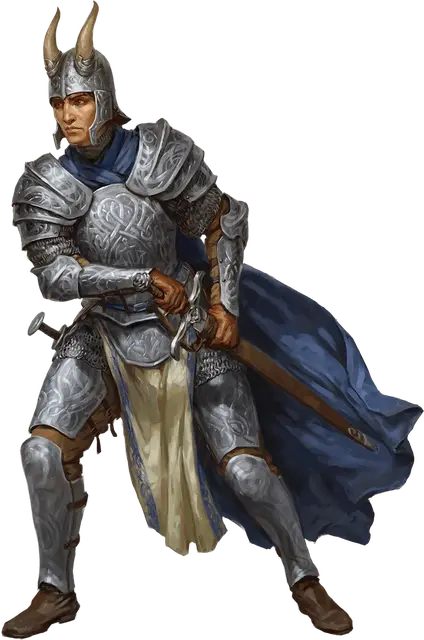

Соламнийский Рыцарь
Knight of Solamnia

Требование: компания в сеттинге "Саги о копье"
Вы тренировались, чтобы стать доблестным воином, известным как Соламнийский Рыцарь. Чёткие правила наставляют каждое ваше действие, а ваша задача — соблюдать их: защищать слабых и противостоять всем формам зла. Ваша честь настолько же важна для вас, как и ваша жизнь.
Владение навыками: Атлетика, Выживание
Языки: Два на ваш выбор
Снаряжение: Один знак отличия, колода карт, комплект обычной одежды и кошель с 10 зм
УМЕНИЕ: Оруженосец Соламнии
Вы получаете черту «Оруженосец рыцаря Соламнии».
Кроме того, Соламнийские Рыцари предоставляют вам бесплатное скромное жильё и еду в любой своей крепости или лагере.
СОЗДАНИЕ ПЕРСОНАЖА Соламнийского Рыцаря
Любой класс, владеющий боевыми навыками, может стать хорошим подспорьем для Рыцарей Соламнии. Воины и паладины составляют основной костяк армии рыцарей. Жрецы (часто домена войны) могут также быть в рангах этой организации.
Для создания более необычного образа рыцаря Соламнии можно взять барда Коллеги доблести (или Коллегии мечей из «Руководства Занатара обо всем») или варвара, преданного идеалам бога Хаббакука (возможно взяв Путь фанатика из «Руководства Занатара обо всем»).
Безделушки Соламнийских Рыцарей. Когда вы создаете персонажа, вы можете совершить бросок по таблице «Безделушки Соламнийских Рыцарей» вместо таблицы безделушек в «Книге Игрока».
Безделушки Соламнийских Рыцарей
| к6 | Безделушка |
| 1 | Плоский серебряный диск, на который вы записываете свои героические похождения. |
| 2 | Часть брони павшего рыцаря. |
| 3 | Подвеска с изображением короны, розы или меча. |
| 4 | Рукоять меча вашего наставника. |
| 5 | Подарок со значением от того, кого вы защитили — возможно носовой платок или перчатка. |
| 6 | Медальон с изображением серебряного дракона внутри. |